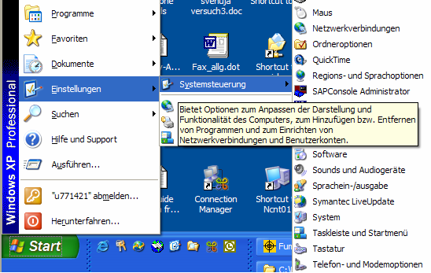
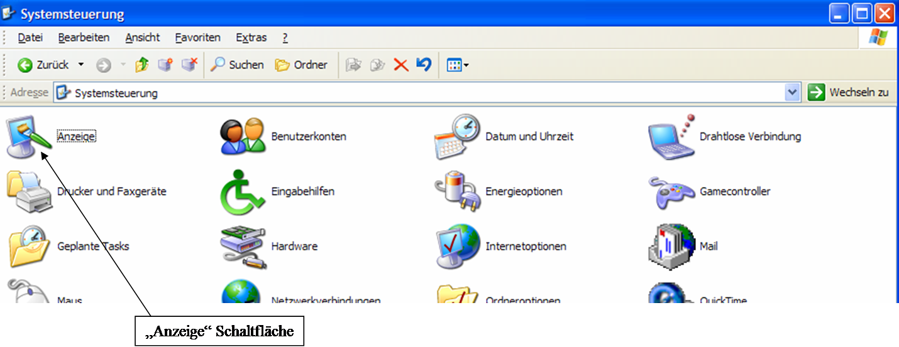
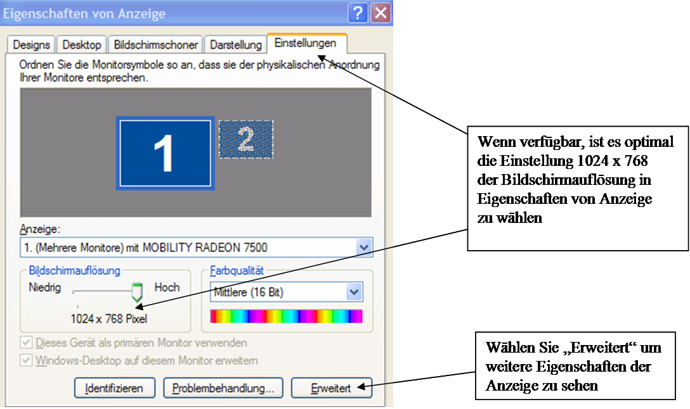
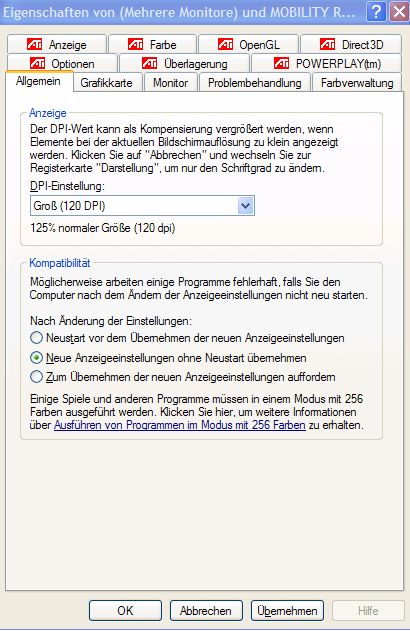
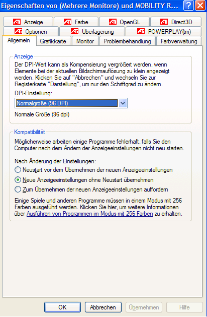

Ändern der Schriftgröße zur Vollanzeige von ProFume Fumiguide
Je nach Eingaben in den Systemeinstellungen der Microsoft
Windows Betriebssoftware können unterschiedliche Darstellungen des ProFume
Fumiguide Programms angezeigt werden. Diese Darstellungen können in der
Systemsteuerung wie nachstehend beschrieben geändert werden.
Klicken Sie
auf die Schaltfläche Start und wählen Sie Einstellungen und
Systemsteuerung.

Unter Systemsteuerung klicken Sie zweimal auf das
Symbolfeld Anzeige.

Anschließend gehen Sie unter Bildschirmeigenschaften
zu Einstellungen. Die optimale Bildschirmeinstellung liegt bei 1024 x
768.

Wenn trotz der oben beschriebenen Einstellung ProFume
Fumiguide nach wie vor nicht als Vollbild angezeigt wird, können Sie eine
weitere Einstellung vornehmen, indem Sie auf Erweitert klicken.
Wenn unter Allgemein die Bildschirmauflösung als "Große Schrift"
eingestellt ist, wählen Sie "Kleine Schrift" um den Vollbildschirm
anzuzeigen.

Beachten Sie die Option "Kleine Schrift" im Pull-down-Menü
für Schriftgrößen. Diese Option zeigt die Schrift in Normalgröße und das
Programm als Vollbild an.
